1 设置 myStudio 环境
下载
注意：安装 myStudio 时，安装路径不能有空格。
myAGV Plus 系统镜像已安装 myStudio
因此，您无需重新下载。
下载链接
您应在 myAGV Plus 系统中下载：Linux 系统版本
1. GitHub
- 输入下载地址后，点击右侧的
myStudio，选择相应的版本进行下载。
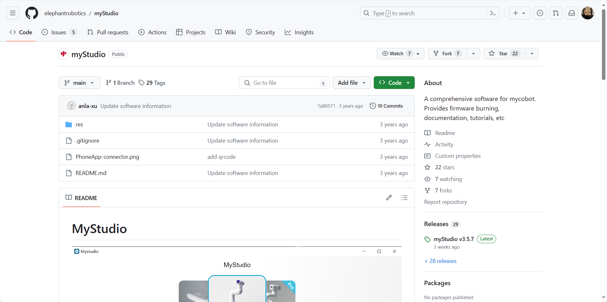
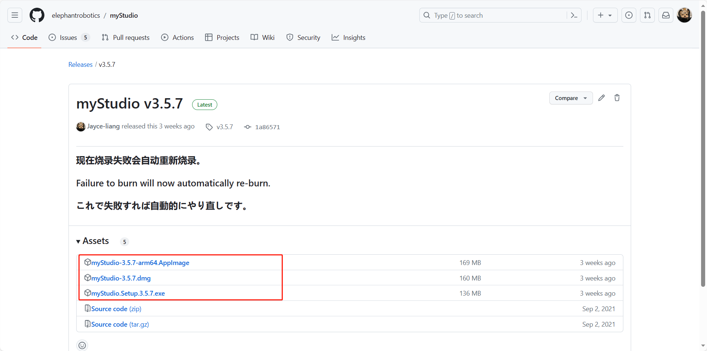
不同的后缀代表不同的系统，请下载相应的版本：
- *.AppImage - Linux 系统
- *.dmg - Mac 系统
- *.exe - 窗口系统
2. 官方网站地址
您可以根据自己的计算机系统选择下载 myStudio。
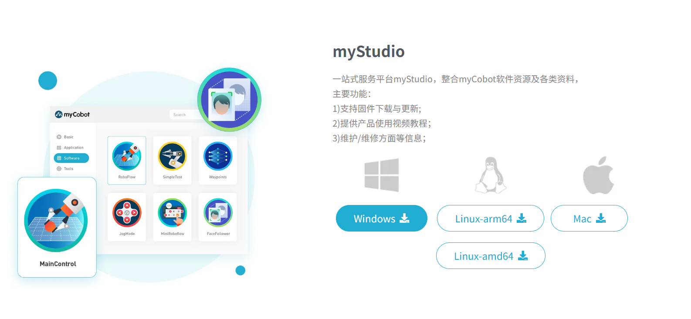
安装
为 Linux 安装 myStudio
从官方网站下载 myStudio Linux 版本，获取安装包，如下所示
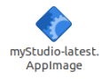
用鼠标右键选择 myStudio-latest.AppImage，点击 Properties 打开它
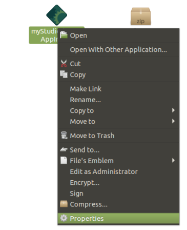
点击进入 Permissions
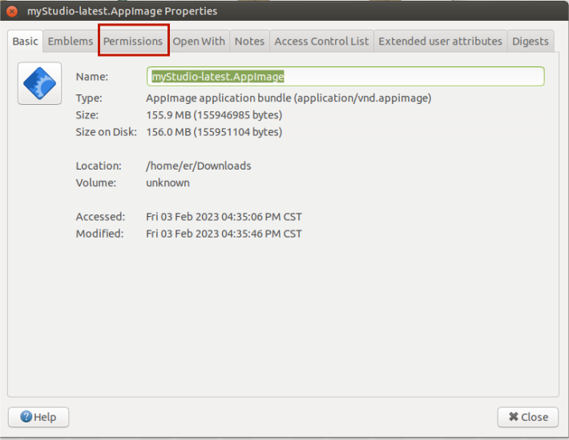
在 Permissions 页面，选中 Allow executing file as program，然后单击 Close 按钮关闭弹出窗口
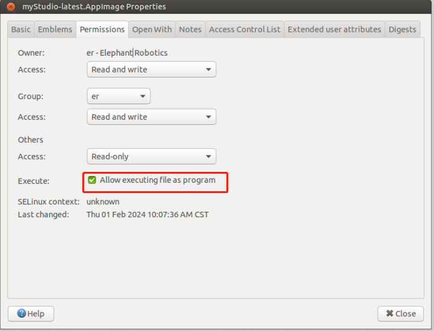
关闭弹出窗口后，双击安装包 myStudio-latest.AppImage 打开 myStudio
为 Windows 安装 myStudio
双击打开名为 Mystudio_Setup_latest.exe 的文件，然后单击 Run。
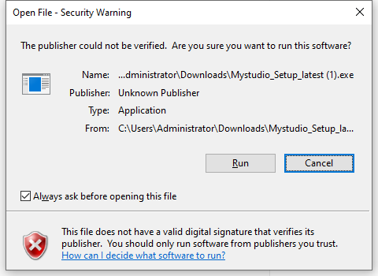
点击 Next>
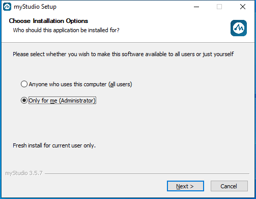
点击 Install 后，等待 myStudio 安装完成
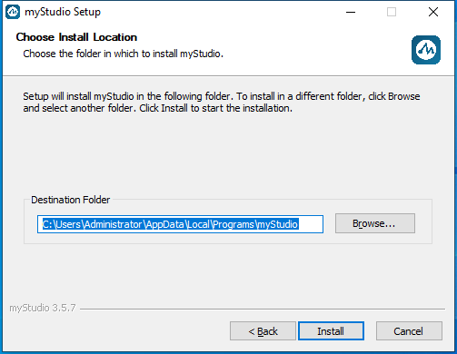
安装完成后，单击 Finish 按钮打开并运行 myStudio
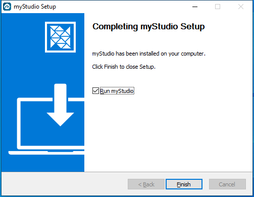
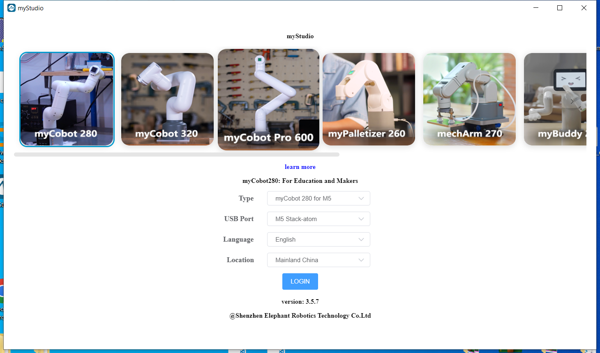
为 MacOS 安装 myStudio
从官方网站下载 Mac 版 myblockly，获得如下所示的安装包。双击打开。
注意：对于 MacOS，安装前请确保系统 "Preferences->Security & Privacy->General"和 "Allow Apps from App Store and Recognized Developers"已启用。
卸载
对于 Linux 系统，卸载 myStudio
直接删除安装包即可
安装包的默认名称是
myStudio-latest.AppImage
卸载适用于 Mac 的 myStudio
只需将 myStudio 移至应用中的垃圾桶即可
卸载适用于 Windows 系统的 myStudio
进入 myStudio 的文件目录，点击运行Uninstall myStudio.exe
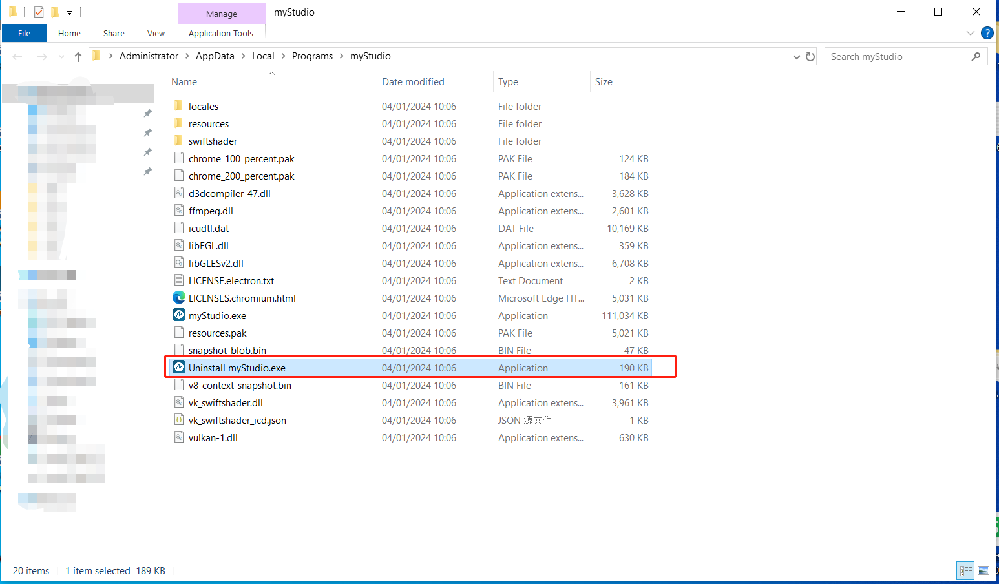
点击 Next>
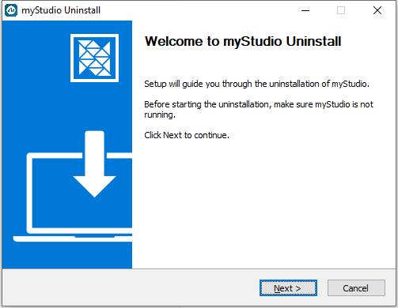
myblockly 已卸载，单击 Finish 退出
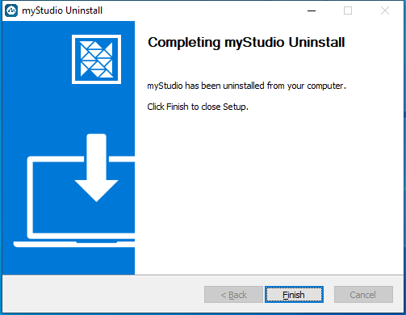
更新
在 myStudio 中，您可以单击 Update 按钮更新以下内容
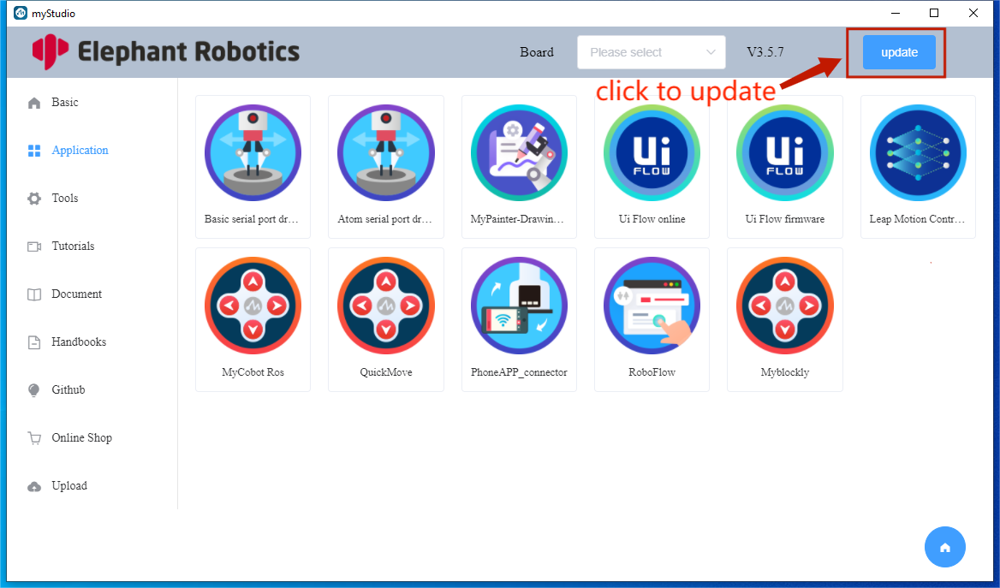